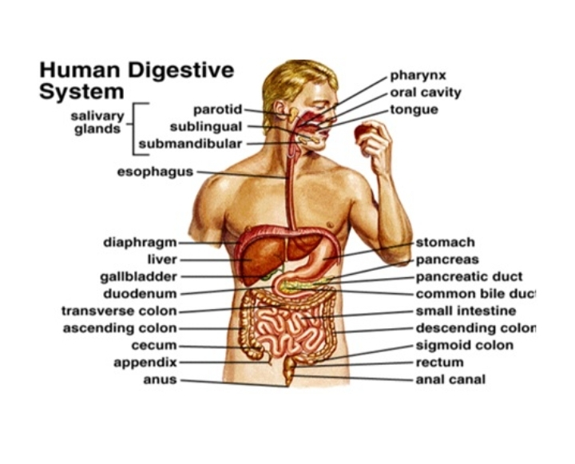

Mechanism of Dark reaction (Light independent
reactions)
/Calvin cycle
Dark reaction does not require light
energy, and it takes place in the stroma of
the chloroplasts. The overall purpose of
dark reaction is to convert carbon dioxide
from the atmosphere into carbohydrates
or sugars which are used to power
primary activities in plants and build their
structures. The process of converting
carbon dioxide into carbohydrates
requires energy produced by ATP and the
reducing power obtained from NADPH
both produced from the light reaction.
The fact that these chains of reactions
are described as dark reactions does not
imply that the reactions cannot take place in the presence of light. It simply means that light energy is not a vital factor in this phase of photosynthesis. The vital factor here is atmospheric carbondioxide, and the products of light reaction are ATP and NADPH. Dark reaction is therefore a synthetic
stage of photosynthesis.
However, such reactions, as cited earlier are
energetically dependent on light reactions
The Calvin cycle has three major phases which are carbondioxide (CO2
) fixation,
reduction of glycerate phosphate (GP), also called phosphoglyceric acid (PGA), and regeneration of ribulose biphosphate (RuBP).
DIGESTIVE ENZYME MECHANISIM
Digestion is the process by which the body breaks down food into smaller molecules that can be absorbed and used for energy and nutrients. The digestive system is a complex network of organs and glands that work together to carry out this process.
The process of digestion begins in the mouth, where food is chewed and mixed with saliva, which contains enzymes that start breaking down carbohydrates. The food then travels down the esophagus and into the stomach, where it is mixed with stomach acid and enzymes that further break down proteins.
From the stomach, the partially digested food moves into the small intestine, where most of the digestion and absorption of nutrients takes place. The pancreas secretes enzymes into the small intestine to break down carbohydrates, proteins, and fats. The liver also plays a role in digestion by producing bile, which helps to emulsify fats so they can be more easily digested.
The small intestine is lined with tiny finger-like projections called villi, which increase the surface area for absorption of nutrients. Nutrients are absorbed into the bloodstream and transported to cells throughout the body for energy and growth.
The remaining waste products that cannot be digested or absorbed pass into the large intestine, where water is absorbed and the waste is formed into feces. The feces are then eliminated from the body through the rectum and anus.
Overall, the digestive system is a highly efficient and complex mechanism that allows the body to extract nutrients from food and eliminate waste products. Proper nutrition and a healthy diet are essential for maintaining optimal digestive function and overall health.

MECHANISM OF ABSORPTION OF NUTRIENTS IN ANIMAL
The absorption of nutrients in animals occurs through various mechanisms in the digestive system. These mechanisms include:
1. Passive diffusion
This is the simplest form of nutrient absorption where nutrients move across the cell membrane from an area of higher concentration to an area of lower concentration. Small molecules such as water, electrolytes, and some vitamins are absorbed through passive diffusion.
2. Facilitated diffusion
This mechanism involves the use of carrier proteins to transport specific nutrients across the cell membrane. These carrier proteins help facilitate the movement of larger molecules such as glucose and amino acids into the cells.
3. Active transport
In active transport, nutrients are transported against their concentration gradient with the help of energy in the form of ATP. This mechanism is used to absorb nutrients such as glucose, amino acids, and some ions.
4. Endocytosis
This mechanism involves the engulfing of large molecules or particles by the cell membrane to form vesicles that transport the nutrients into the cell. This process is used to absorb larger molecules such as proteins and lipids.
Overall, the absorption of nutrients in animals is a complex process that involves various mechanisms to ensure that essential nutrients are taken up by the body for growth, repair, and energy production.